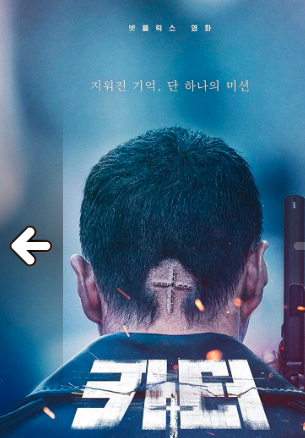

¿Quieres realmente salir de la realidad?
¡Sumergete en el mundo de la imaginación y diviertete sin limites, llevando tu mente a distintas vivencias y lo mejor en un mismo espacio!>
Bienvenido a tu Stark Cinemas
La Peli del mes más recomendada por todos nuestros Starkers
 Un joven aprende que un superhéroe que se había dado por desaparecido en una batalla épica de hace 20 años podría estar en realidad vivo.
Un joven aprende que un superhéroe que se había dado por desaparecido en una batalla épica de hace 20 años podría estar en realidad vivo. Stallone entra en el mundo de los superhéroes con una película muy disfrutable y de planteamiento original.
Nuevas Peliculas
-
Carter
Un hombre sin recuerdos con una sola misión. Asiste a un trepidante espectáculo de acción en tiempo real.
-
Luck

Sam Greenfield, que ha crecido en un centro de acogida, es la persona más desafortunada del mundo. Cuando descubre la ignota Tierra de la Suerte, Sam debe hermanarse con las criaturas mágicas que viven allí para cambiar su fortuna..
-
La Ira de Dios

La ira de Dios es una película de thriller psicológico argentina dirigida por Sebastián Schindel y basada en el libro La muerte lenta de Luciana B..